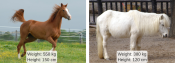
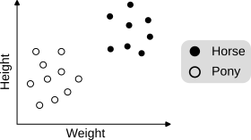
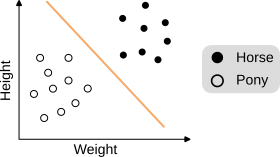
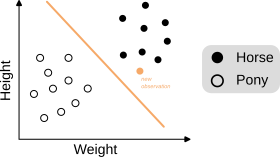
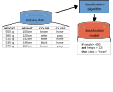
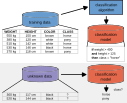

Micro-Degree Artificial Intelligence and Society
– Technical Aspects of AI –
Lecture 1.2: Supervised Learning


Supervised Learning:
Classification
Classification
- A number of observations with attributes and their values (x1, ..., xd).
- For each observation, a class (label)
y ∈ {y1, ..., yk}.
Goal: Find the correct class for a new observation without a class.
→ Classification
Example
Obervations of animals with hooves
y1: Horse ----------- y2: Pony

{kind=link}
Observation: Animal weighing 520 kg and 148 cm tall.
→ Horse
Supervised Learning: Classification
Find a line that optimally separates horses and ponies.



Classification "Pipeline"
Training Phase
Application Phase


Summary
- In supervised learning, we try to learn known patterns and recognize them automatically.
- Supervised learning consists of a training phase and an application phase.
- With supervised learning, we can predict class membership (classification).
- Supervised learning also allows predicting continuous values (regression) → more in the next lecture.
- Nomenclature:
- Attributes (like "weight" and "height" in the animal example) are also often called features.
- Classes (like "horse" and "pony" in the animal example) are also often called labels or target values.
- Observations (like triplets of weight, height and class in the animal example) are also often called data points.
Exercise (5 min)
- Think of a use case for supervised learning from your daily life, e.g., from studies, work, or private life.
- For the given use case, consider:
- What is a single observation (or "data point")?
- What are the attributes (or "features") of the observation?
- What are the classes (or "labels", "target values") you want to predict?